某些没有截图或者没有特别说明的步骤，表示取默认值即可。
查看S3桶（此处为 s3://lab3-859236298333-sin-com/spark/output）内的EMR实验中生成的parquet格式文件是否存在。此处的 859236298333 是帐号ID（仅供参考，可能每个学员的都不太一样）。
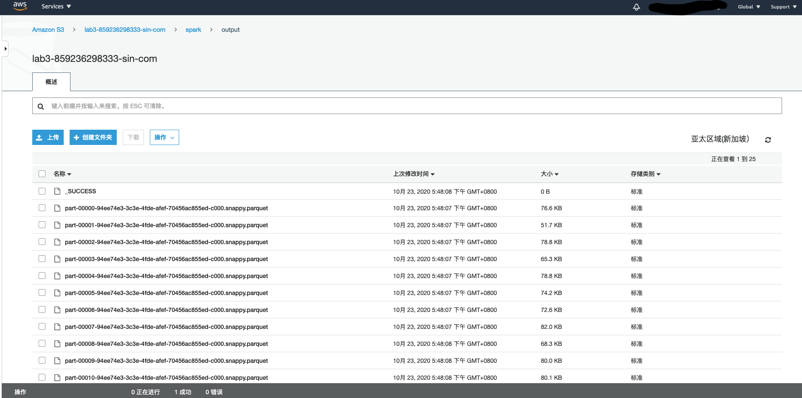
选择IAM服务，点击角色->创建角色，选择Redshift 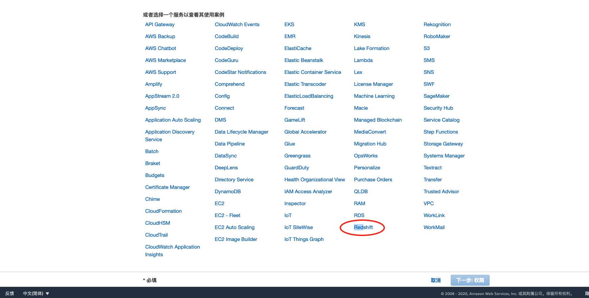
选择Redshift-Customizable，点击下一步权限 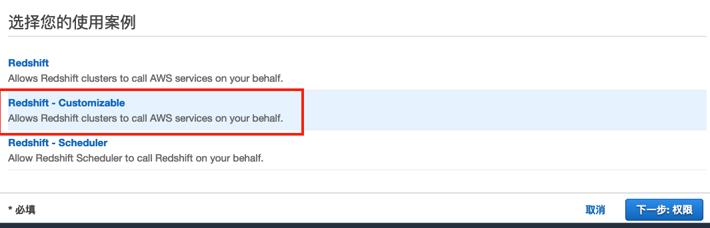
选择权限AmazonS3ReadOnlyAccess 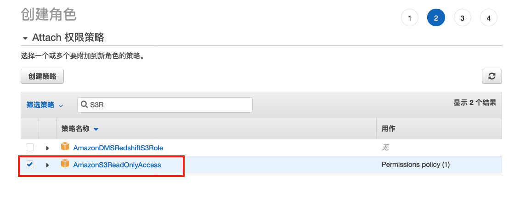
添加权限名字myRedshiftRole，点击确认 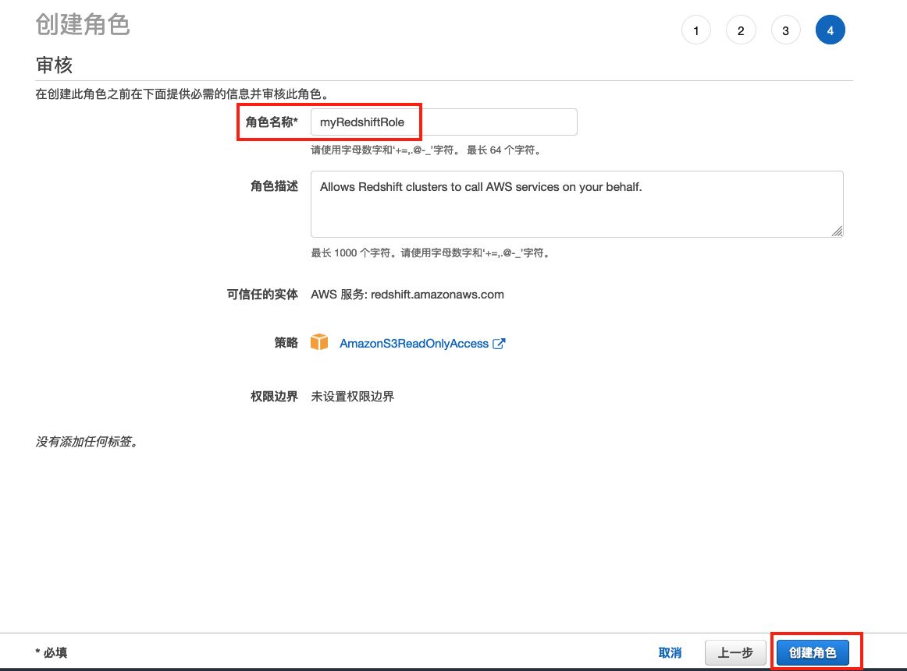
创建Redshift集群前，先创建子网组。选择Redshift服务，在左边菜单条中选择“CONFIG”->”管理子网组“ 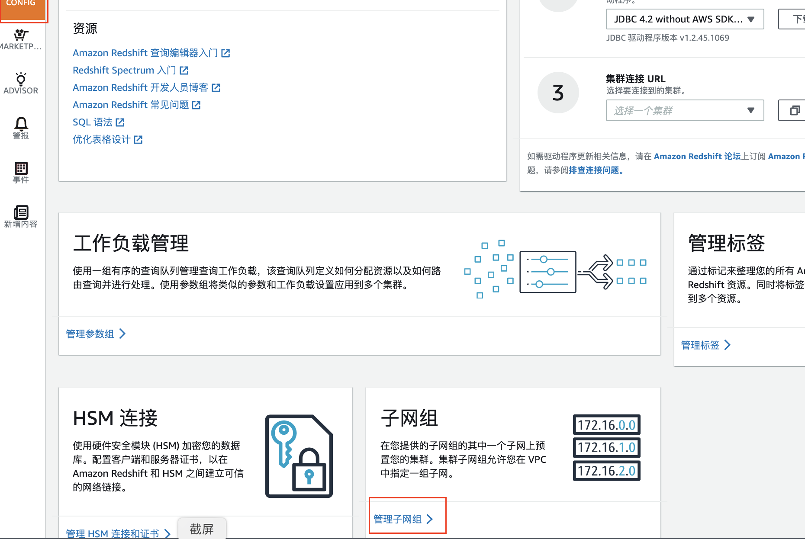
然后选择“创建集群子网组” 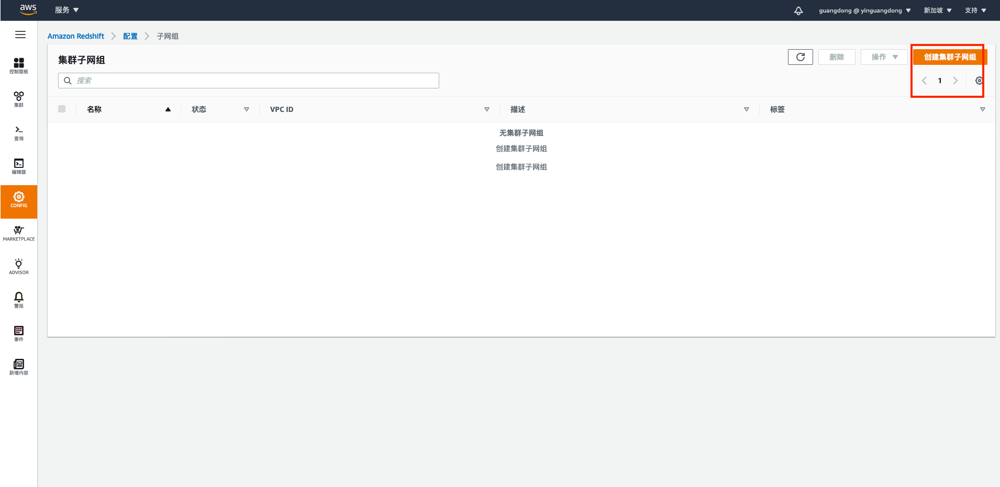
子网组名称可接受缺省名字“cluster-subnet-group-1“，在描述框中输入任意说明文字。选择“默认VPC”，选择“为此VPC添加所有子网“，然后点击“创建集群子网组”完成创建子网组。 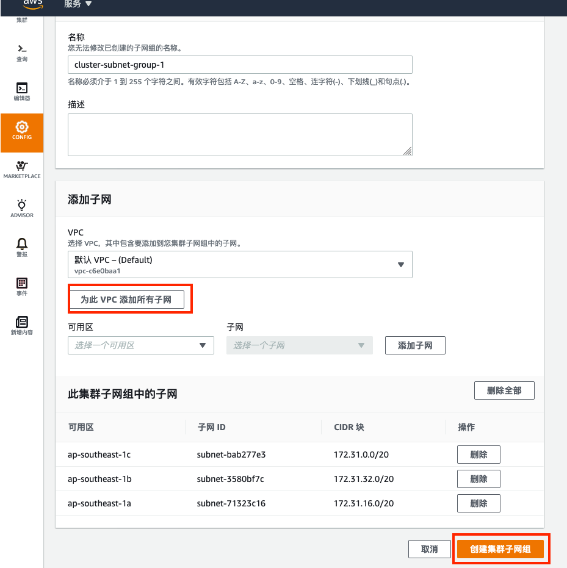
在左侧菜单中选择“集群”，点击“创建集群“，设置集群的名字（不要用中文，不要用特殊字符，英文开头，可以有数字，可以有减号），节点类型选择dc2.large 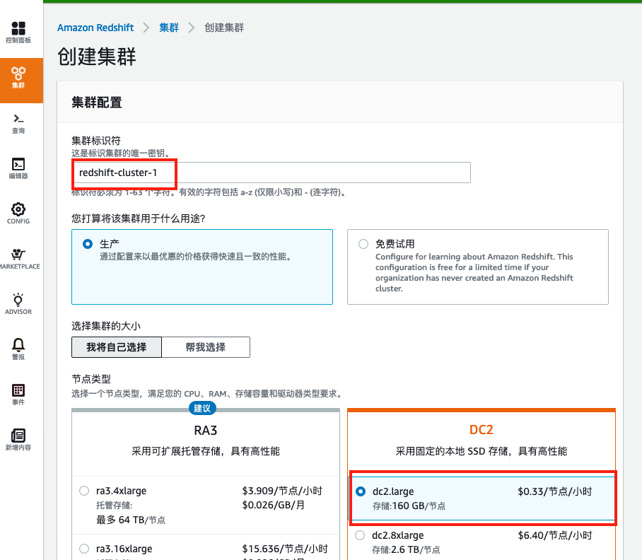
数据库配置接受缺省值，输入主用户密码（请记住您输入的密码） 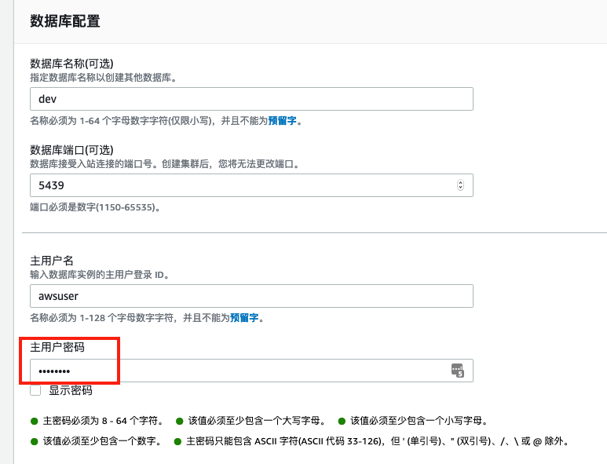
集群权限中，选择前面创建的myRedshiftRole角色，点击“添加IAM角色” 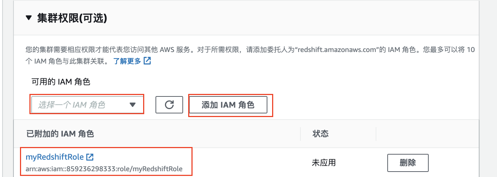
其它配置中，选择默认VPC，缺省安全组和之前创建的集群子网组，点击确认“创建集群”，大约5分钟后，集群变为“Available”状态。 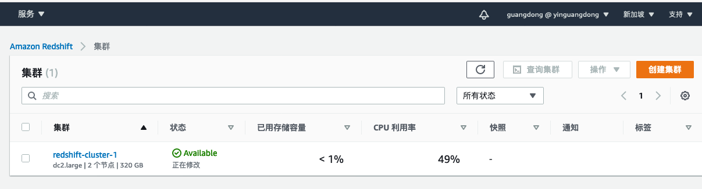
有两种方式访问Redshift数据库，一种是通过 Redshift Console上的查询编辑器，一种是通过 SQL客户端（例如SQL Workbench/J 客户端）。本实验中为了简便操作，使用Redshift Console上的查询编辑器来访问数据库。选择左边菜单中“编辑器”，在“连接到数据库”窗口中输入一下参数，然后“连接到数据库” 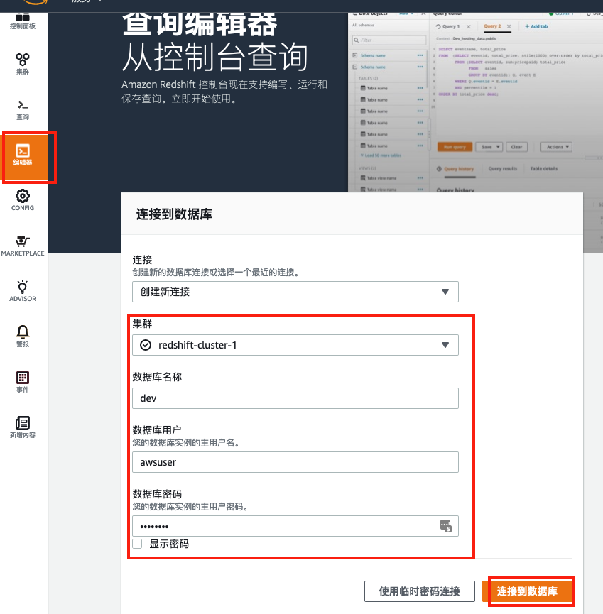
在查询编辑器中创建表，在左边Select Schema中选择“Public”，然后在SQL查询窗口中输入创建表的SQL语句：
create table table1(
tno varchar(20),
tdate varchar(15),
uno varchar(10),
pno varchar(10),
tnum int,
uname varchar(20),
umobile varchar(20),
ano varchar(20),
acity varchar(50),
aname varchar(50),
pclass varchar(10),
pname varchar(50),
price decimal(10, 2)
);
如下图所示 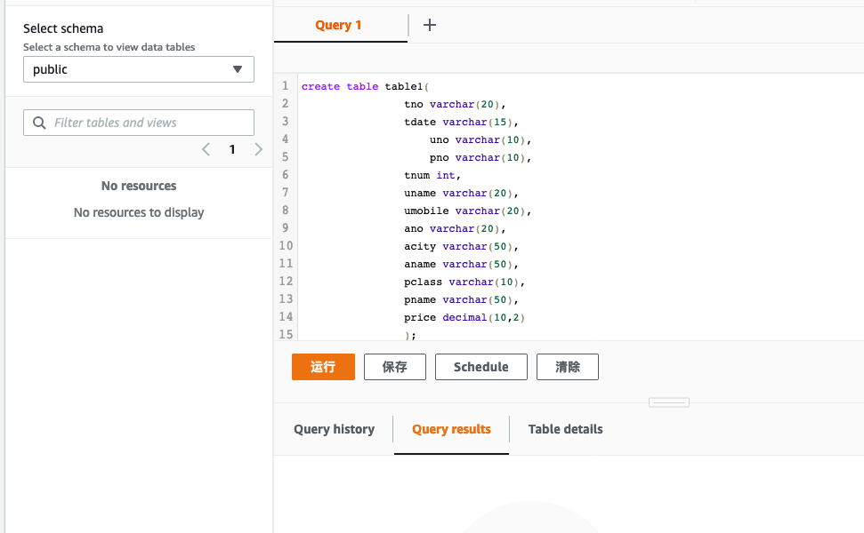
选择“运行”，结果应该显示”Completed”
新开一个SQL查询窗口（此处为Query 2），输入下面装载S3数据的SQL命令，注意要将帐号替换为实际的帐号ID，并确认争取的S3桶地址。
copy table1 from 's3://lab3-859236298333-sin-com/spark/output/'
credentials 'aws_iam_role=arn:aws:iam::859236298333:role/myRedshiftRole'
format as parquet;
如下图所示 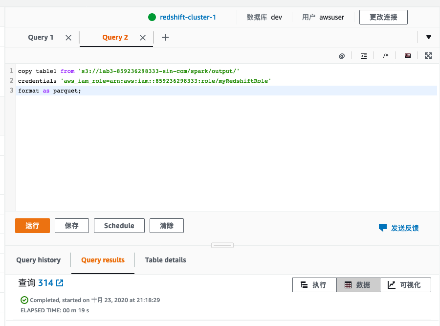
点击运行，结果应显示为“Completed”。在Query3中输入”select * from table1；”应查询中表中的数据。在Query4 中输入“select count(*) from table1; “，应查询到表中的数据。这说明S3中的数据已完成copy到Redshift数据仓库中。 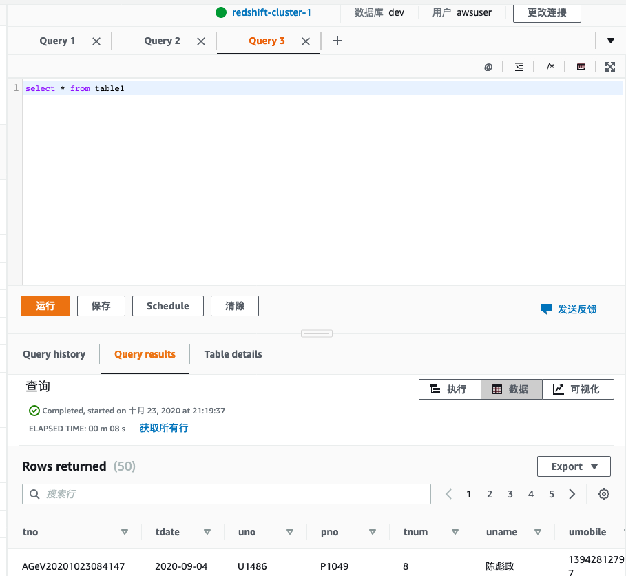
下一步，我们将使用AWS Quicksight 将Redshift中的数据进行可视化展现。在此之前，需要给予Quicksight从Internet访问Redshift的权限。为此，我们先在EC2菜单中创建一个公网的弹性IP地址（过程略）。然后修改Redshift属性，赋予公开访问权限。
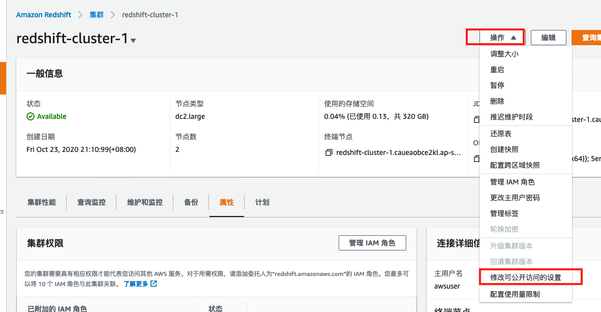
将可公开访问改成“是”，选择对应的弹性公网IP地址即可。
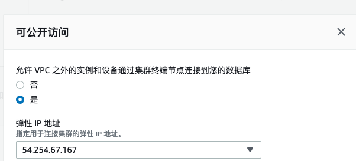
此操作需要一点时间，略微等待几分钟即可。